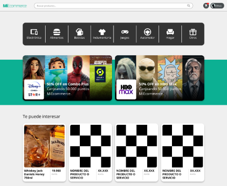

Proyecto desarrollado para la asignatura de Programación Web de la Universidad Nacional de Villa Mercedes (UNVIME).
Este es un ecommerce sencillo inspirado en Mercado Libre, desarrollado como trabajo práctico de la materia.
Estudiantes:

Diseños no propios, dados como recursos en la clase.
Antes de instalar el proyecto, asegurate de tener instalado en tu sistema:
Node.js versión 22.0 o superior. Podés verificar tu versión con:
node -v
Si no la tenés o tenés una versión anterior, descargala desde nodejs.org.
Python 3.x (necesario únicamente para compilar dependencias nativas).
Este proyecto usa better-sqlite3, un módulo que en algunos sistemas necesita compilarse localmente mediante node-gyp, y esa herramienta requiere Python instalado para funcionar. Si al correr npm install aparece un error relacionado con gyp o node-gyp, instalá Python desde python.org (marcando la opción "Add python.exe to PATH" durante la instalación) y volvé a intentar.
En Windows, además de Python puede ser necesario instalar las Build Tools de C++:
Redis (carrito, spec §24). En desarrollo podés levantarlo con Docker:
docker run -d --name redis-dev -p 6379:6379 redis:7-alpine
La URL se configura con REDIS_URL (default redis://localhost:6379). Si Redis
no está disponible, el carrito y el checkout fallan; el catálogo y el login
siguen funcionando.
git clone https://github.com/Elses2/Ecommerce-Two
cd Ecommerce-Two
npm run init
Este comando instala las dependencias, crea el archivo .env desde .env.example solo si no existe (no sobrescribe uno ya existente), compila el build y carga los datos de ejemplo (el seed es idempotente).
Si
npm run initfalla por errores de compilación (por ejemplo, relacionados conbetter-sqlite3onode-gyp), revisá la sección Requisitos previos.
npm run init te deja el archivo .env creado en la raíz, listo para editar.
Variables principales:
JWT_SECRETgenerala con un valor aleatorio largo (por ejemplo, la salida deopenssl rand -hex 48) y no la compartas públicamente;REDIS_URLapunta a tu Redis local;FALLBACK_IMAGE_URLpuede dejarse con el valor por defecto. No hay cookies de sesión: la autenticación es JWT.
npm run dev
http://localhost:3000
La documentación interactiva de la API (Swagger UI) queda disponible en http://localhost:3000/api-docs.
npm run init ya ejecuta el build de producción, así que no hace falta correrlo durante la instalación. Solo hace falta correrlo a mano para regenerar dist/ tras un cambio:
npm run build
| Comando | Qué hace |
|---|---|
npm run init |
Prepara el entorno completo (deps + .env + build + seed) |
npm run dev |
Servidor de desarrollo (tsx watch + Tailwind watch) |
npm run build |
Compilación de producción a dist/ |
npm run seed |
Carga los datos de ejemplo (idempotente) |
npm run test:checkout |
Tests del checkout T1–T7 (DB temporal) |
npm run test:middlewares |
Tests de caracterización de middlewares M1–M22 (DB temporal) |
npm run test:auth |
Tests de autenticación/autorización A1–A8 (DB temporal) |
npm run test:cart |
Tests del carrito en Redis C1–C6 (DB temporal + Redis /15) |
npm run build:docs |
Regenera docs/ (TypeDoc + grafo, requiere Graphviz) |
npm run test:checkout
npm run test:middlewares
npm run test:auth
npm run test:cart
npm run test:checkout corre los tests del checkout (scripts/test-checkout.ts,
casos T1–T7: stock, rollback, idempotencia por token, precio congelado, carrera
multi-proceso y validación).
npm run test:middlewares levanta la app como proceso hijo y verifica el
comportamiento de los middlewares (scripts/test-middlewares.ts, casos M1–M22:
contador del carrito, stateless sin cookies, helmet/CSP, 404, validación de ids,
estáticos, Swagger, body parsers, autenticación y el error handler). Requiere
npm run build previo.
npm run test:auth verifica la autenticación/autorización JWT
(scripts/test-auth.ts, casos A1–A8: registro, email repetido y su carrera,
validación, login, credenciales inválidas, /api/auth/me con tokens
válidos/ausentes/expirados/manipulados, authorize por rol y ownership de
órdenes).
npm run test:cart verifica el carrito en Redis (scripts/test-cart.ts, casos
C1–C6: aislamiento entre usuarios, HINCRBY concurrente, eliminación al llegar
a 0, persistencia, precios recalculados desde SQLite y vaciado tras el checkout).
Necesita Redis y usa la base /15; solo hace FLUSHDB si la URL apunta ahí.
Ambos usan una DB temporal — nunca tocan dev.db — y su exit code es ≠ 0
si algo falla.
spectsEccomerce/SPEC.md es la especificación viva: describe el proyecto tal como es hoy y es la única fuente de verdad que se edita. El resto de los .md en spectsEccomerce/ son históricos y no se actualizan. Las referencias (spec §X.Y) de los comentarios del código apuntan a SPEC.md.npm run build:docs regenera la documentación en docs/ (carpeta versionada en git): el HTML de TypeDoc (según scripts/typedoc.json) y el grafo de dependencias docs/graphs/dependencias.svg (madge). Requiere Graphviz instalado en el sistema. Si cambió la arquitectura, commitear el resultado.El proyecto está dockerizado y se publica automáticamente en GitHub Container Registry (ghcr.io) al mergear un Pull Request a main. Más detalles en spectsEccomerce/SPEC.md §21.
# 1. Crear .env con JWT_SECRET, REDIS_PASSWORD y TUNNEL_TOKEN (ver .env.prod.example)
# 2. Iniciar servicios
docker compose -f docker-compose.prod.yml up -d
# 3. Cargar datos de ejemplo (solo la primera vez)
docker compose -f docker-compose.prod.yml run --rm tienda npm run seed
docker compose pull && docker compose up -d
Nota: el servidor está detrás de un Cloudflare Tunnel; no expone puertos. La base de datos SQLite persiste en un volumen Docker nombrado (
tienda-data). Las variables de entorno (JWT_SECRET,JWT_EXPIRES_IN,REDIS_PASSWORD,PORT,DB_PATH,FALLBACK_IMAGE_URL) se configuran en.env, nunca en la imagen.